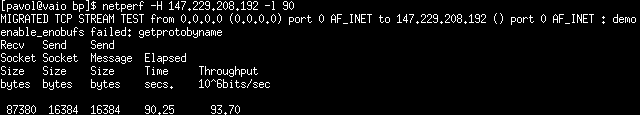
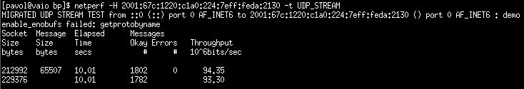

Netperf
Táto utilita poskytuje mo¾nosti testovania rôznych aspektov sie»ového výkonu. Nezameriava sa len na meranie TCP a UDP priepustnosti. Pri testovaní sa prejavilo mnoho chýb v implementácii, ktoré znaène obmedzujú pou¾itie tohto nástroja.Zdroje a základne spustenie
Domovská stránkaManuál
Link na stiahnutie - Pou¾itá verzia 2.6.0
Architektúra klient-server, netperf, netserver.
Príklad základného spustenia klienta a servera:
$ netperf -H <adresa,protokol>
$ netserver <adresa,protokol> -D
Uká¾ka testov
Test TCP priepustnosti.
$ netperf -H adresa

Test UDP priepustnosti pod protokolom IPv6.
$ netperf -H adresa -t UDP_STREAM

Nekorektné správanie
S nástrojom Netperf sa nám nepodarilo previes» testovania pod protokolom UDP a spojazdni» komunikáciu so sie»ovým protokolom IPv6. Obe tieto vlastnosti sú v nástroji implementované a uvedené v manuálových stránkach. Testovanie pod transportným protokolom UDP sa podarilo spojazdni» pri pou¾ití rovnakých operaèných systémoch na koncových staniciach. Utilita v¹ak nechcela nadviaza» spojenie pomocou IPv4. Preto meranie UDP priepustnosti nepova¾ujeme za správne fungujúce.
Vybrané prepínaèe
| Parameter | Popis |
|---|---|
| Základne | |
-h |
výpis nápovedy |
-V |
výpis verzie |
-D |
spustí server na popredí |
| Nastavenie spojenia | |
-p <èíslo> |
¹pecifikácia èísla portu |
-4 |
pou¾ije IPv4 adresu, nastaví AF_INET |
-6 |
pou¾ije IPv6 adresu, nastaví AF_INET6 |
-t <typ> |
typ transportného protokolu, pre UDP hodnota UDP_STREAM, pre TCP TCP_STREAM - implicitné |
| ©pecifikácia výpisov | |
-f [GMKgmk] |
nastaví jednotky výpisu, veµké písmena umocnia jednotky na druhú a malé na desiatu |
| Nastavenie då¾ky trvania testu | |
-l <èíslo> |
då¾ka prenosu dát v sekundách |
| Nastavenie prená¹aných dát | |
-F <cesta> |
prená¹ane dáta zoberie zo súboru |
| Test ¹pecifické | |
-m <èíslo> |
nastavenie veµkosti poµa predávaného funkcii send, pou¾itie pri UDP_STREAM |
-s <èíslo> |
nastaví veµkos» prijímajúceho a odosielaného poµa na strane klienta |
-S <èíslo> |
nastaví veµkos» prijímajúceho a odosielaného poµa na strane servera |